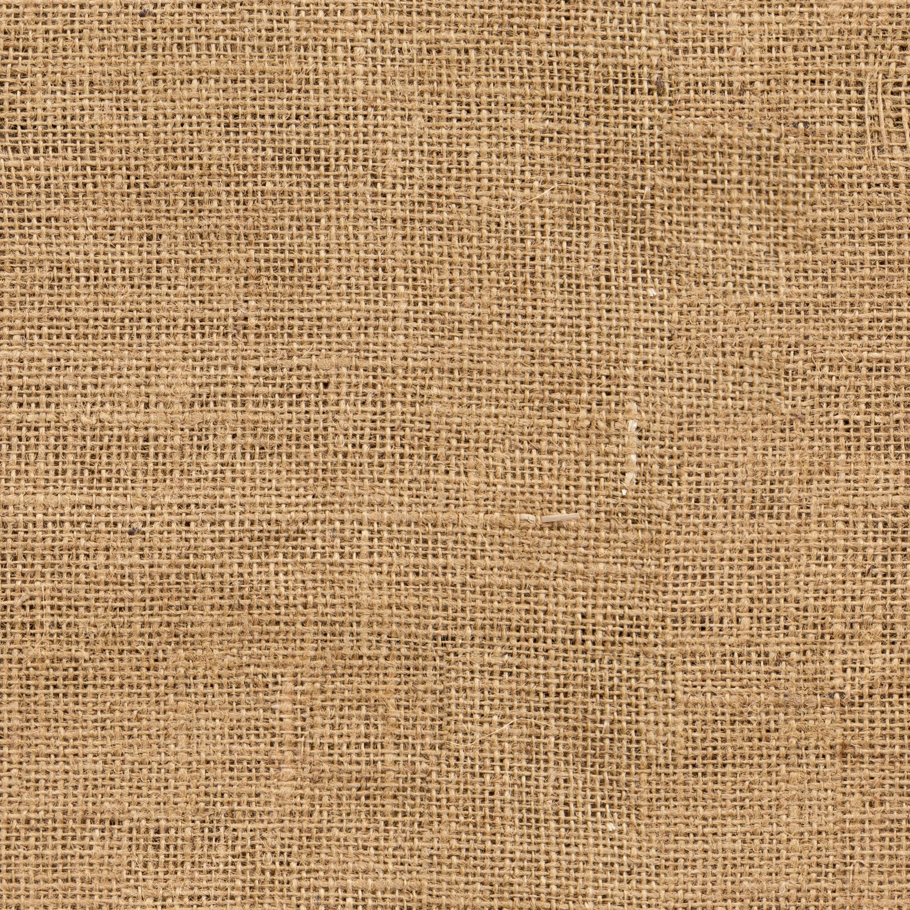

My First Dip into the World of Graphics Design
I have always been amazed and fascinated by the world of animation. My personal favorites are shows like Ben 10, Hilda, Kung Fu Panda, etc., and graphic books like Abina, the book series Malika, etc. Beyond the storytelling, I’ve also been curious about how animation films are made in general. So during my winter breaks in 2022, I decided to learn the basics of creating 3D animation from CGBOOST Academy. At CGBOOST, I learned how to work with Blender - a powerful and versatile 3D computer graphics software used for creating, modeling, animating, and rendering a wide range of visual content.
More Importantly, this experience helped me gain an understanding of how to create 3D objects from scratch, employing lighting and design to achieve the desired visual aesthetics. I also acquired skills in working with 2D Images in the process of creating 3D objects.
A Noted Discovery
In the course I learned how mathematics is used to make this process possible and user-friendly. I improved my visual understanding of Geometry due to Blender’s practical use of the 3D coordinate system to manipulate and design objects. The 3D coordinate system in Blender works like a virtual 3D space, where every point in a scene is defined by three numbers (X, Y, and Z).
These numbers represent the object’s position relative to the world or to other objects in the scene. By using these coordinates, Blender can precisely position objects in the 3D space, allowing one to move, rotate, and scale them with accuracy.
My Journey Through Creating the Apple Bowl Scene.
By the end of the course, I created a 3D representation of an apple bowl, in the bowl are apples resting on a cloth. Adjacent to the bowl, is a designed knife placed upon the same cloth that rests on the wooden floor after cutting a washed apple in half. Below is my reflection of each lesson:

Lesson One: Creating the Apple
To make the 3D apple, my first step involved crafting a solid 3D version of it, commonly referred to as an Organic Model in Blender. Making the organic model was a very cool experience for me. I was introduced to using new tools such as sculpting to mold, shape, and fine-tune digital clay-like materials directly on the 3D surface. The fine-tuning required smoothing out the meshes (vertices and edges) of the sculptured images.
Once done, I then proceeded to apply textures to wrap it around the organic model to resemble a real-life apple. The process of adding the textures was also a really fascinating experience for me, as I was once again introduced to new tools, such as Texture Painting to paint directly onto the model’s surface to add color and details, UV Mapping to apply textures and images accurately to the apple, and Principled Shader to control various surface properties of objects, such as color, roughness, and transparency,

To enhance the level of details on the outside and inside of the apple, I used the following textures below:

Finally, after replicating the apples I proceeded to add a leaf to a couple of them, using the image shown below with a transparent alpha channel. A special type of image that allows certain parts of the picture to be see-through or invisible.

Lesson Two: Simulating the Cloth
The next step in the creation of the final product, was to make the cloth. After making the cloth, I was then introduced to the process of using and learning how to perform a cloth simulation, to lay the cloth midway in the bowl and then onto the ground. This process not only taught me how to make and use a cloth simulation it also introduced me to other tools when making simulations including, the Fluid Simulation to animate liquids, such as water, pouring, splashing, and interacting with objects and (one of my favorite) the Particle System to create simulations for various effects like smoke, fire, rain, dust, and more.

Lesson Three: Crafting the knife
The third step in the creation of the final product, was making the knife. Throughout this process, I used the same technique I used for making the apples, starting with creating the organic model, and then applying the textures and materials. However, this time, I had more detail to work with to make the knife look as realistic as possible.
Below are the following textures I worked with:

Lesson Four: The bowl and Wooden Floor
The final step involved creating the bowl and Wooden Floor. As with the previous steps, I used the same technique used for making the apples, beginning with making the organic model, and then applying the textures and materials.
However, upon completing the bowl, I took a moment to explore the possibility of making it spin. Through some exploration, I discovered that blender’s timeline could be used to manage animations and edit keyframes. With this newfound discovery, I was able to animated the bowl, making it spin in different directions!

My Journey Through Creating a Dount.
To continue my exploration into further understanding of how animation films are made in general I found a Blender Beginner Donut Tutorial on Youtube of a step by step instruction on how to make a 3D donut.